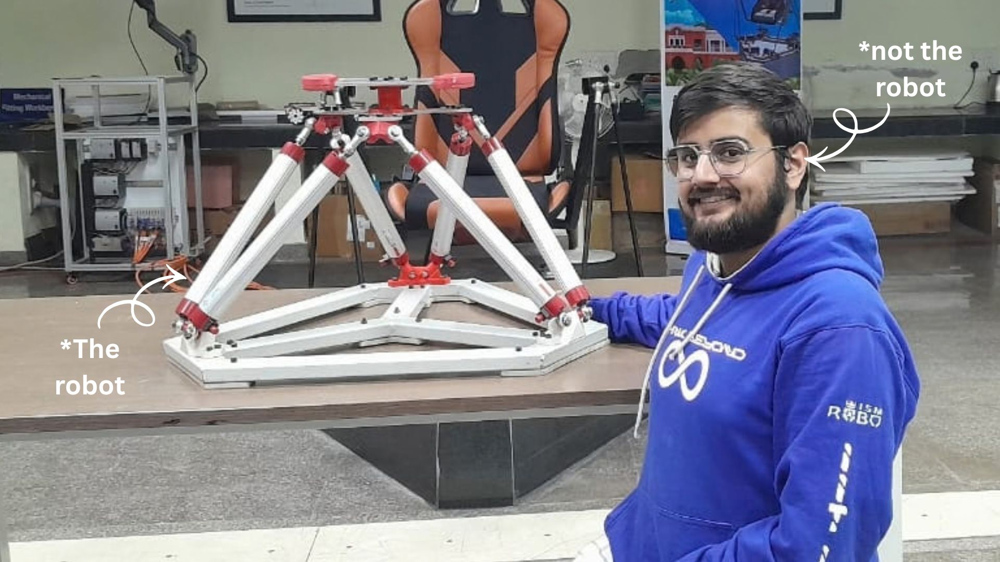
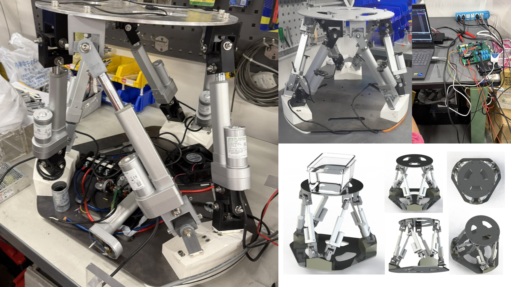
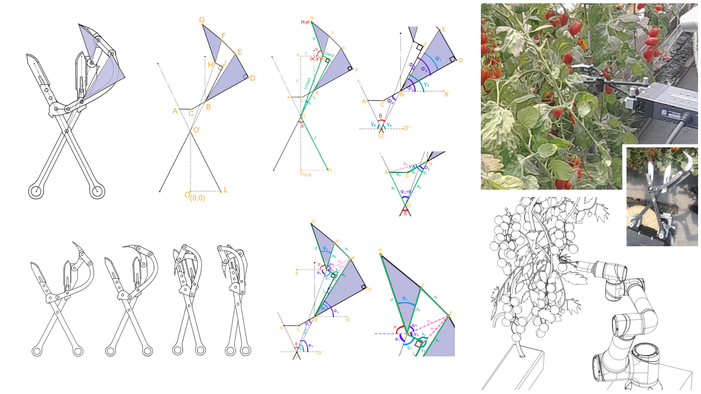
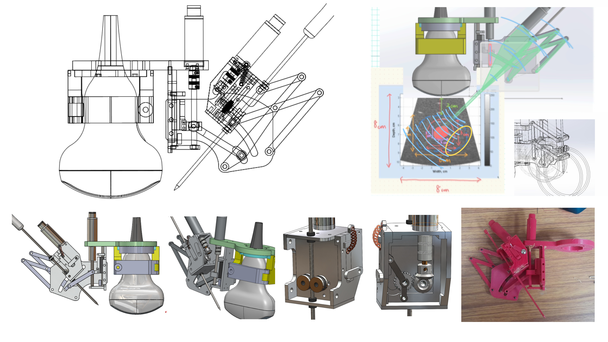
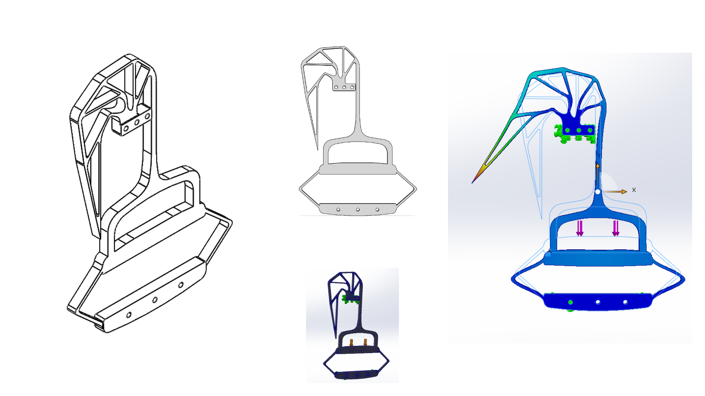
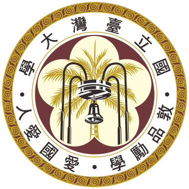
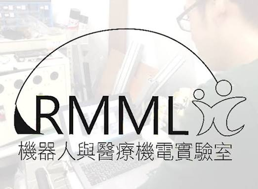

Developed a 6-DOF Stewart-Gough joystick as my bachelor thesis. Six potentiometer arms and custom 3D wedges capture translation and rotation, while forward kinematic control enables real-time pose control of parallel manipulators.
Mechanical Design Engineer · Robotics & Mechanism Design
I am a Mechanical Design Engineer at SLB (formerly Schlumberger), working on Well Completions tools. I earned my BTech in Mechanical Engineering from Indian Institute of Technology, Dhanbad in May 2025. My technical and research experience spans RMML Lab at National Taiwan University, IIT Dhanbad’s Robotics Lab, and the M2D2 Lab at Indian Institute of Science. I have been granted 6 patents internationally, with 3 more filed domestically. Hope you like my work! 😊
10 projects

Developed a 6-DOF Stewart-Gough joystick as my bachelor thesis. Six potentiometer arms and custom 3D wedges capture translation and rotation, while forward kinematic control enables real-time pose control of parallel manipulators.

Built a six-actuator Stewart platform with 341 components and 108 bearings, designed around a 20 kg human anthropomorphic phantom. Integrated custom universal joints, inclined mounts and STM32-based actuator control for respiratory-motion simulation.

Designed a single-DOF, six-bar harvesting tool with synchronized grappling and cutting. Derived governing equations by solving trigonometric equations for 40 parameters to predict hook trajectories; refined 20+ prototypes through field tests.

Designed a double-parallelogram RCM mechanism with independent angular alignment and needle insertion. Developed the linkage geometry, workspace study, governing equations, geared drive and lever-operated manual release.

Developed a monolithic compliant hand grip strength analyser using elastic deformation and indicator displacement. Eliminated conventional joints and springs, incorporated adjustable stiffness, and performed FEM analysis of the mechanism.
Built an autonomous, articulated Load-Haul-Dumper prototype for mining automation. Combined modular chassis design and hydraulic steering with ROS navigation, A* path planning, and predictive control in a customizable scaled platform.
Designed a retractable slurry agitator with a 1-5 m telescopic shaft and automated blade engagement. Integrated PLC-controlled extension and rotation with rotary encoder feedback to homogenize viscous slurry in deep sewage reservoirs.
Designed a single-DOF, 24-bar mechanism to reproduce cheetah-like running motion. Mirrored linkages, revolute joints, and gear-driven phase synchronization generate coordinated quadrupedal leg trajectories from a single rotary input.
Developed a self-balancing robotic bike with dual omnidirectional wheels. Derived nonlinear dynamics using Lagrangian mechanics and applied LQR feedback control for upright stability and multidirectional motion, validating physical prototypes.

Contributed mechanical design and assembly to a 6-SPS parallel robot for aseptic remote ultrasound at AIIMS Jodhpur, in collaboration with Aduza. Focused on mechanical integration and assembly of the parallel-robot system.
Built an electronic borehole compass combining accelerometer, gyroscope, and magnetometer sensor fusion. Integrated Bluetooth and 3D trajectory reconstruction for real-time surveying; field-tested in underground mines deeper than 200 m.
Try another term or reset the filters.
Mechanical Design Engineer
Jul 2025 – Present

Research Intern under Prof. Ping-Lang Yen
On-site: May 2024 – Jul 2024; later remote

Undergraduate Researcher under Prof. Arun Dayal Udai
Sep 2023 – Feb 2025
Research Intern under Prof. G. K. Ananthasuresh
May 2023 – Jul 2023
6 international records · Granted.
Developed a single-DOF, 6-bar kinematic harvesting tool integrating synchronized grappling and cutting mechanisms. Derived governing mathematical model by resolving 40 parameters to predict the hook trajectory across three phases (hooking, pulling, holding) for autonomous harvesting.
Developed a 6-DOF Stewart-Gough platform with forward kinematic control, integrating six potentiometer arms and specially designed 3D wedges to capture translational and rotational inputs, enabling real-time pose control of large parallel manipulators for robotics and aerospace applications.
Developed a single-DOF Remote Center of Motion (RCM) mechanism for surgical needle insertion, integrating parallelogram-based angular alignment, gear-operated locking, modular needle deployment, and manual override to enable controlled needle positioning during tumor resection procedures.
Developed an innovative monolithic compliant hand grip strength analyzer that accurately measures grip force through elastic deformation and indicator displacement, eliminating conventional joints and springs while offering adjustable stiffness, high repeatability with minimum error.
Developed an autonomous, center-articulated Load-Haul-Dumper (LHD) prototype integrating modular chassis design, hydraulic steering, and ROS-based navigation with A* path planning and predictive control, offering a cost-effective, customizable platform for mining automation.
Developed a retractable slurry agitator with a 1 - 5 m extendable telescopic shaft, automated blade engagement, PLC-controlled extension and rotation, and rotary encoder feedback, designed for being able to homogenize high-viscosity slurry in deep and narrow sewage reservoirs.
3 domestic records · Filed
Developed a six-actuator Stewart–Gough platform comprising 341 components and 108 bearings, with custom universal joints and tri-axis-inclined mounting wedges. Designed around a 20 kg human anthropomorphic phantom and integrated STM32-based inverse kinematics, HIWIN drivers and encoder feedback for coordinated motion.
Developed a self-balancing robotic bike with dual omni-directional wheels, deriving nonlinear dynamics using Lagrangian mechanics and implementing LQR feedback control for upright stabilization and multidirectional motion, validated through simulation and physical prototyping.
Developed a single-DOF, 24-bar kinematic mechanism replicating cheetah-like running motion through mirrored linkages, revolute joints, and gear-driven phase synchronization, generating coordinated leg trajectories from a single rotary input to achieve quadrupedal locomotion.
In collaboration with Coal India Innovation Center
Developed an electronic borehole compass integrating accelerometer, gyroscope, and magnetometer sensors with sensor-fusion algorithms, Bluetooth connectivity, and 3D trajectory reconstruction for real-time borehole surveying, field-tested in underground mines at depths exceeding 200 m.

UpcomingResearch paperUnder RMML Lab, National Taiwan University
Developing an autonomous surgical system integrating robotic arm manipulation, precision needle insertion, and Stewart platform-based respiratory simulation, using intelligent control algorithms for motion-compensated tumor targeting and minimally invasive surgery on anatomical phantoms.
Bachelor of Technology in Mechanical Engineering